Last updated: 2024-05-29
Checks: 5 1
Knit directory: SMARTrial/analysis/
This reproducible R Markdown analysis was created with workflowr (version 1.7.0). The Checks tab describes the reproducibility checks that were applied when the results were created. The Past versions tab lists the development history.
Great job! The global environment was empty. Objects defined in the global environment can affect the analysis in your R Markdown file in unknown ways. For reproduciblity it’s best to always run the code in an empty environment.
The command set.seed(20220425) was run prior to running
the code in the R Markdown file. Setting a seed ensures that any results
that rely on randomness, e.g. subsampling or permutations, are
reproducible.
Great job! Recording the operating system, R version, and package versions is critical for reproducibility.
Nice! There were no cached chunks for this analysis, so you can be confident that you successfully produced the results during this run.
Great job! Using relative paths to the files within your workflowr project makes it easier to run your code on other machines.
Tracking code development and connecting the code version to the
results is critical for reproducibility. To start using Git, open the
Terminal and type git init in your project directory.
This project is not being versioned with Git. To obtain the full
reproducibility benefits of using workflowr, please see
?wflow_start.
metaSub <- metaSmart[,metaSmart$DISEASE %in% "AML"]exprMat <- assays(metaSub)[["imputed"]]
smpAnno <- colData(metaSub) %>% as_tibble() %>%
mutate(respGroup = ifelse(!is.na(Resp_manual),
ifelse(Resp_manual == "R", "responder","non-responder"), NA))
pcRes <- prcomp(t(exprMat), scale. = FALSE, center = TRUE)
pcTab <- pcRes$x[,1:10] %>%
as_tibble(rownames = "sampleID") %>%
left_join(smpAnno)Joining with `by = join_by(sampleID)`PC1 versus PC2
ggplot(pcTab, aes(x=PC1, y=PC2)) +
geom_point(aes(col = Resp_manual)) +
#ggrepel::geom_text_repel(aes(label = id)) +
theme_bw()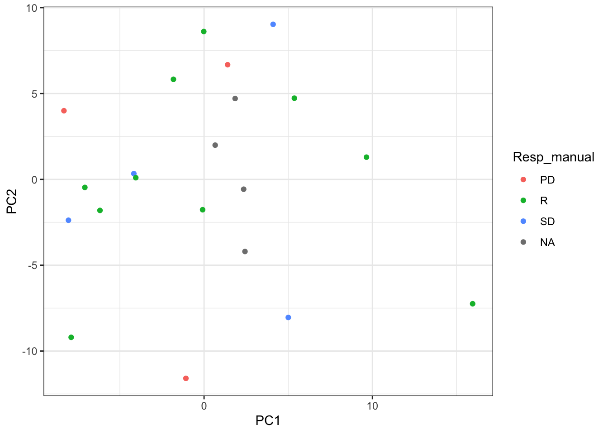
PC3 versus PC4
ggplot(pcTab, aes(x=PC3, y=PC4)) +
geom_point(aes(col = Resp_manual)) +
#ggrepel::geom_text_repel(aes(label = id)) +
theme_bw()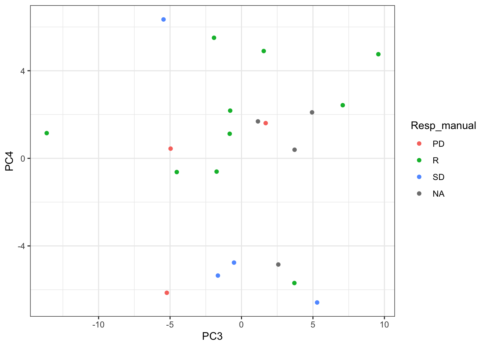
pcs <- pcRes$x[,1:10] %>%
as_tibble(rownames = "sampleID")
metaTab <- smpAnno %>%
select(sampleID, SEX, MATERIAL, DISEASE, ENRICHMENT, INITIAL_FREEZING, DEAD_CELL_REMOVAL, THAW_BATCH,
PERCENT_VIABILITY, tumor_infiltration, Pretreatment, NPM1:Trisomy.8q24, Treatment_type, treatment_spec,chemo_pat,
Resp_manual, respGroup) %>%
mutate(across(NPM1:Trisomy.8q24, as.factor))
resTab <- jyluMisc::testAssociation(pcs, metaTab, joinID = "sampleID") %>%
filter(p<0.05)
head(resTab) var1 var2 p p.adj
1 PC1 IDH1 0.0009803125 0.1862594
2 PC1 INITIAL_FREEZING 0.0063493703 0.3984713
3 PC10 CAK 0.0092341784 0.3984713
4 PC3 THAW_BATCH 0.0100966280 0.3984713
5 PC6 Pretreatment 0.0113205667 0.3984713
6 PC3 ENRICHMENT 0.0125833035 0.3984713No PC associated with resposne group
Enrichment
ggplot(pcTab, aes(x=PC1, y=PC2)) +
geom_point(aes(col = ENRICHMENT)) +
#ggrepel::geom_text_repel(aes(label = id)) +
theme_bw()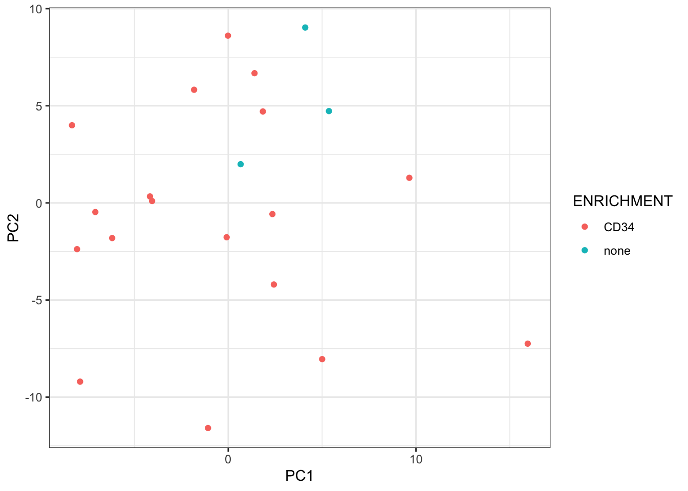
Response
ggplot(pcTab, aes(x=PC1, y=PC2)) +
geom_point(aes(col = respGroup, shape = Resp_manual)) +
#ggrepel::geom_text_repel(aes(label = id)) +
theme_bw()Warning: Removed 4 rows containing missing values (`geom_point()`).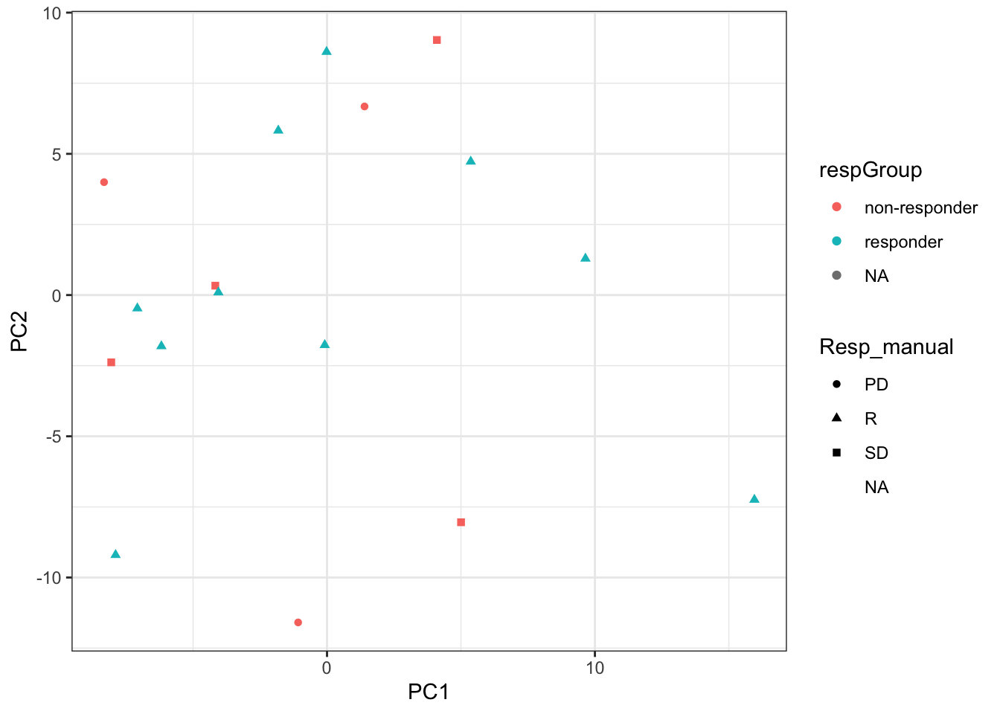
Subset samples:
PD and SD will be considered as non-responders (NR) and will be compared
to responders (R) This is different to the SMARTrial study, in which
only PD were compared to responders. If we only use R here, there are
not enough samples.
#dataset
load("../output/metaSmart.RData")
metaSub <- metaSmart[, metaSmart$DISEASE %in% "AML" &
metaSmart$ENRICHMENT %in% "CD34" &
!is.na(metaSmart$Resp_manual)]
metaSub$respGroup <- ifelse(metaSub$Resp_manual =="R", "R", "NR")
metaSub$respGroup <- factor(metaSub$respGroup, levels = c("R","NR"))Filter out proteins with too many missing values
x <- assay(metaSub)
t1 <- rowSums(!is.na(assay(metaSub))[,metaSub$respGroup=="R"]) >= 3
t2 <- rowSums(!is.na(assay(metaSub))[,metaSub$respGroup=="NR"]) >= 3
keepProt <- t1 & t2
metaSub <- metaSub[keepProt, ]
dim(metaSub)[1] 477 15Number of samples
table(metaSub$respGroup)
R NR
9 6 exprMat <- assays(metaSub)[["imputed"]]
designMat <- model.matrix(~respGroup, colData(metaSub))
fit <- limma::lmFit(exprMat, designMat)
fit2 <- limma::eBayes(fit)
resTab <- limma::topTable(fit2, coef = "respGroupNR", number = Inf) %>%
as_tibble(rownames = "name") %>%
dplyr::rename(pval = P.Value, adj_pval = adj.P.Val) %>%
arrange(pval)
hist(resTab$pval)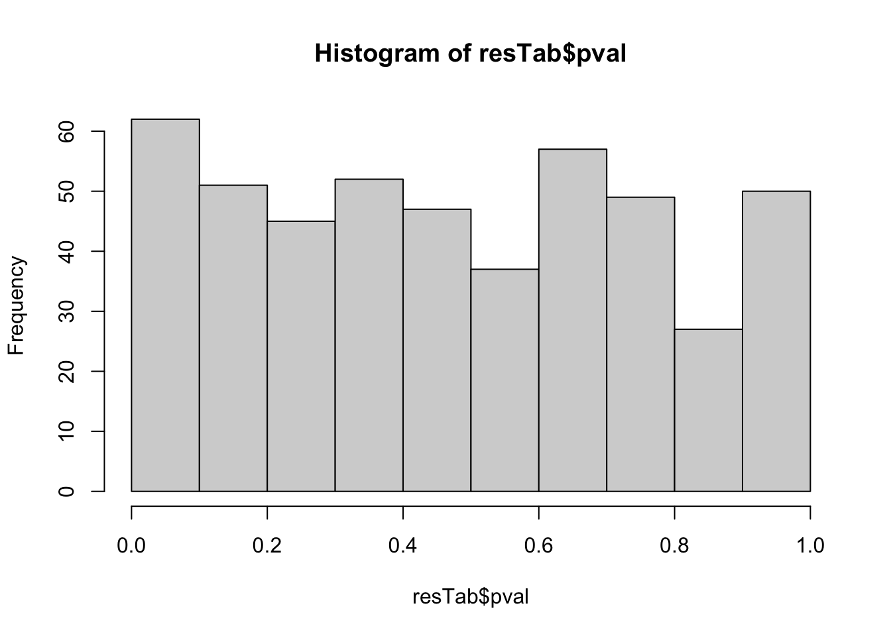
Save the table for MOFA filtering
save(resTab, file = "../output/resTab_metabolomic_AML_CD34enriched.RData")filter(resTab, pval <= 0.05) %>% mutate(across(where(is.numeric), formatC, digits=2)) %>%
select(name, pval, adj_pval, logFC) %>%
DT::datatable()Warning: There was 1 warning in `mutate()`.
ℹ In argument: `across(where(is.numeric), formatC, digits = 2)`.
Caused by warning:
! The `...` argument of `across()` is deprecated as of dplyr 1.1.0.
Supply arguments directly to `.fns` through an anonymous function instead.
# Previously
across(a:b, mean, na.rm = TRUE)
# Now
across(a:b, \(x) mean(x, na.rm = TRUE))pList <- lapply(seq(9), function(i) {
rec <- resTab[i,]
plotTab <- tibble(expr = exprMat[rec$name,],
group = metaSub$respGroup)
ggplot(plotTab, aes(x=group, y = expr)) +
geom_boxplot(aes(fill = group), alpha=0.5) +
ggbeeswarm::geom_beeswarm() +
ggtitle(sprintf("%s (P=%s)",rec$name, formatC(rec$pval, digits = 2))) +
theme_bw()
})
cowplot::plot_grid(plotlist = pList, ncol=3)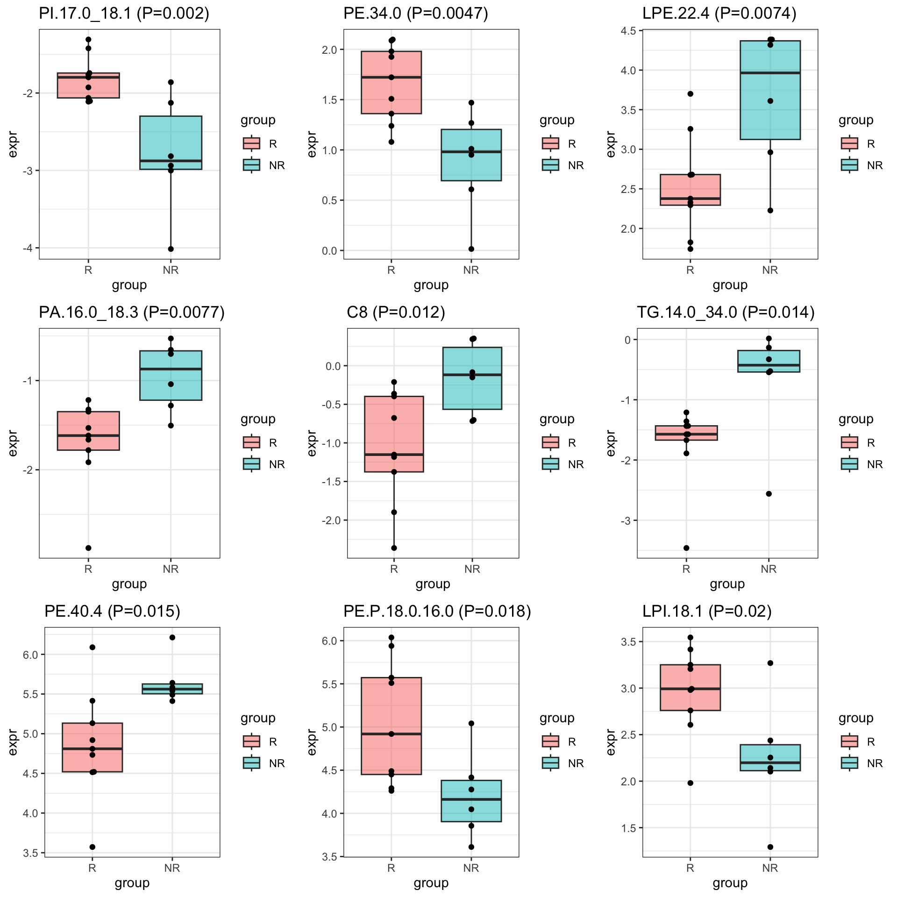
Subset samples:
PD and SD will be considered as non-responders (NR) and will be compared
to responders (R) This is different to the SMARTrial study, in which
only PD were compared to responders. If we only use R here, there are
not enough samples.
#dataset
load("../output/metaSmart.RData")
metaSub <- metaSmart[, metaSmart$DISEASE %in% "AML" &
#metaSmart$ENRICHMENT %in% "CD34" &
!is.na(metaSmart$Resp_manual)]
metaSub$respGroup <- ifelse(metaSub$Resp_manual =="R", "R", "NR")
metaSub$respGroup <- factor(metaSub$respGroup, levels = c("R","NR"))Filter out proteins with too many missing values
x <- assay(metaSub)
t1 <- rowSums(!is.na(assay(metaSub))[,metaSub$respGroup=="R"]) >= 3
t2 <- rowSums(!is.na(assay(metaSub))[,metaSub$respGroup=="NR"]) >= 3
keepProt <- t1 & t2
metaSub <- metaSub[keepProt, ]
dim(metaSub)[1] 478 17Number of samples
table(metaSub$respGroup)
R NR
10 7 exprMat <- assays(metaSub)[["imputed"]]
designMat <- model.matrix(~respGroup, colData(metaSub))
fit <- limma::lmFit(exprMat, designMat)
fit2 <- limma::eBayes(fit)
resTab <- limma::topTable(fit2, coef = "respGroupNR", number = Inf) %>%
as_tibble(rownames = "name") %>%
dplyr::rename(pval = P.Value, adj_pval = adj.P.Val) %>%
arrange(pval)
hist(resTab$pval)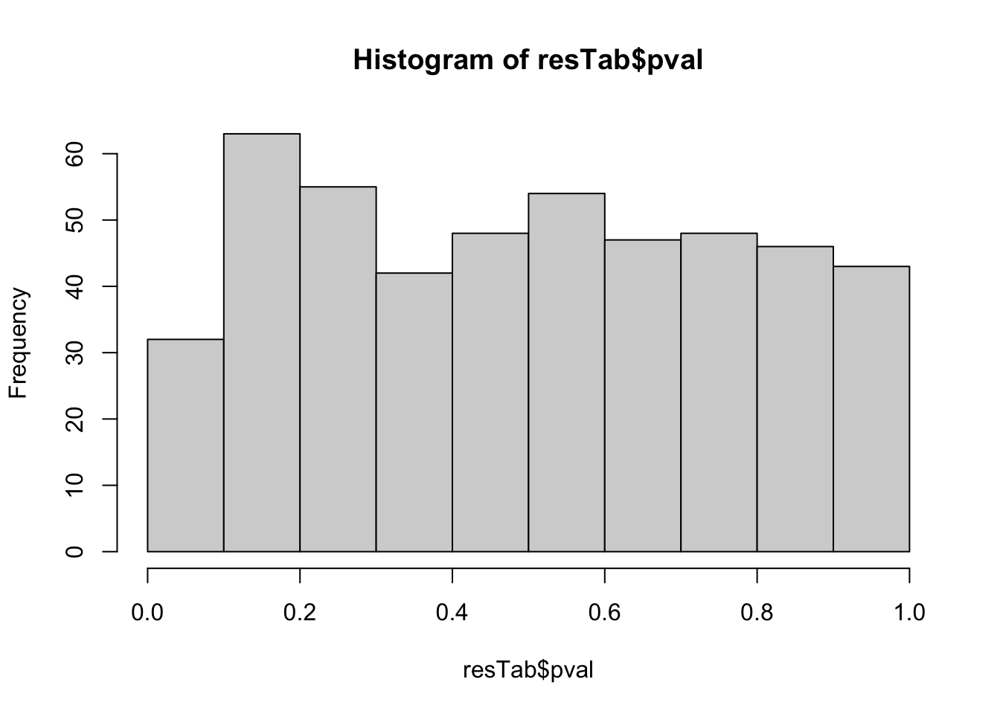
Save the table for MOFA filtering
save(resTab, file = "../output/resTab_metabolomic_AML_all.RData")filter(resTab, pval <= 0.05) %>% mutate(across(where(is.numeric), formatC, digits=2)) %>%
select(name, pval, adj_pval, logFC) %>%
DT::datatable()pList <- lapply(seq(9), function(i) {
rec <- resTab[i,]
plotTab <- tibble(expr = exprMat[rec$name,],
group = metaSub$respGroup)
ggplot(plotTab, aes(x=group, y = expr)) +
geom_boxplot(aes(fill = group), alpha=0.5) +
ggbeeswarm::geom_beeswarm() +
ggtitle(sprintf("%s (P=%s)",rec$name, formatC(rec$pval, digits = 2))) +
theme_bw()
})
cowplot::plot_grid(plotlist = pList, ncol=3)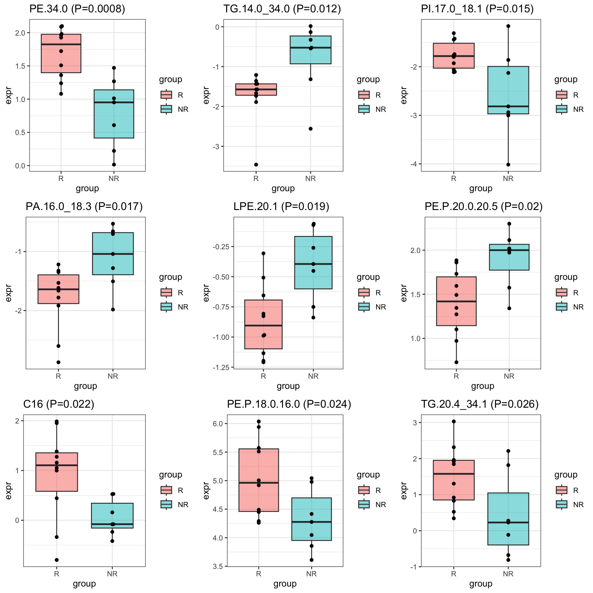
metaSub <- metaSmart[,metaSmart$DISEASE %in% "CLL"]exprMat <- assays(metaSub)[["imputed"]]
smpAnno <- colData(metaSub) %>% as_tibble() %>%
mutate(respGroup = ifelse(!is.na(Resp_manual),
ifelse(Resp_manual == "R", "responder","non-responder"), NA))
pcRes <- prcomp(t(exprMat), scale. = FALSE, center = TRUE)
pcTab <- pcRes$x[,1:10] %>%
as_tibble(rownames = "sampleID") %>%
left_join(smpAnno)Joining with `by = join_by(sampleID)`PC1 versus PC2
ggplot(pcTab, aes(x=PC1, y=PC2)) +
geom_point(aes(col = Resp_manual)) +
#ggrepel::geom_text_repel(aes(label = id)) +
theme_bw()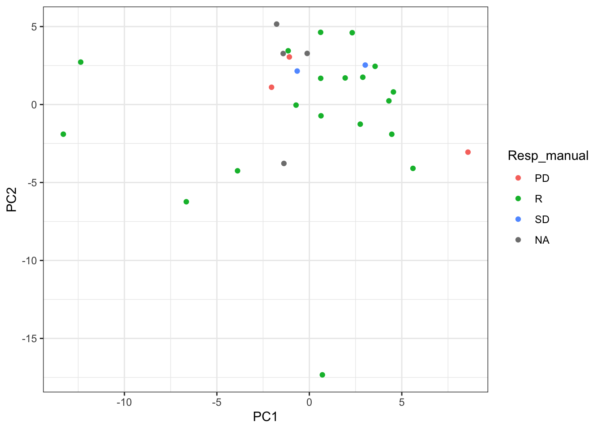
PC3 versus PC4
ggplot(pcTab, aes(x=PC3, y=PC4)) +
geom_point(aes(col = Resp_manual)) +
#ggrepel::geom_text_repel(aes(label = id)) +
theme_bw()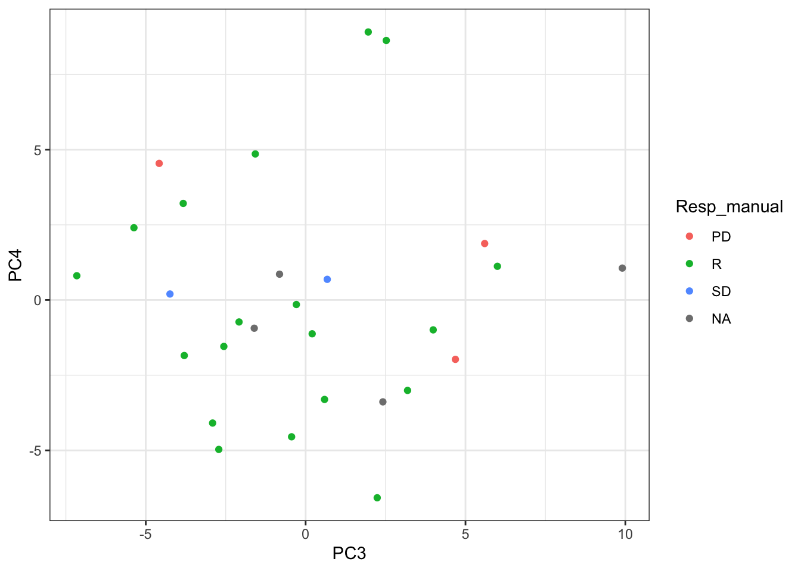
pcs <- pcRes$x[,1:10] %>%
as_tibble(rownames = "sampleID")
metaTab <- smpAnno %>%
select(sampleID, SEX, MATERIAL, DISEASE, ENRICHMENT, INITIAL_FREEZING, DEAD_CELL_REMOVAL, THAW_BATCH,
PERCENT_VIABILITY, tumor_infiltration, Pretreatment, NPM1:Trisomy.8q24, Treatment_type, treatment_spec,chemo_pat,
Resp_manual, respGroup) %>%
mutate(across(NPM1:Trisomy.8q24, as.factor))
resTab <- jyluMisc::testAssociation(pcs, metaTab, joinID = "sampleID") %>%
filter(p<0.05)
head(resTab) var1 var2 p p.adj
1 PC3 Trisomie_12q13 0.001257624 0.1662400
2 PC6 DEAD_CELL_REMOVAL 0.001511273 0.1662400
3 PC1 PERCENT_VIABILITY 0.006246262 0.4580592
4 PC6 THAW_BATCH 0.009637405 0.4580981
5 PC5 Trisomie_12q13 0.013236211 0.4580981
6 PC9 INITIAL_FREEZING 0.013372520 0.4580981No PC associated with resposne group
Enrichment
ggplot(pcTab, aes(x=PC1, y=PC2)) +
geom_point(aes(col = ENRICHMENT)) +
#ggrepel::geom_text_repel(aes(label = id)) +
theme_bw()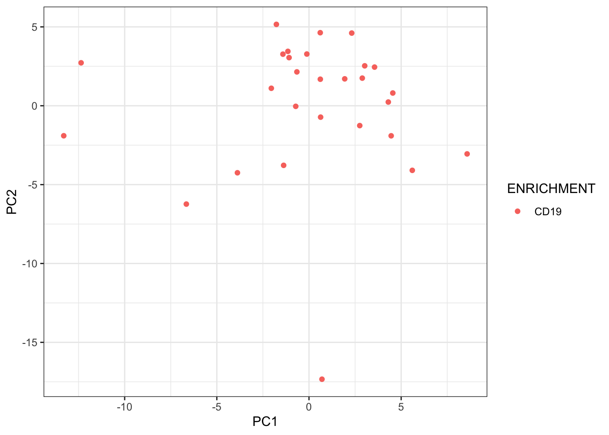
Response
ggplot(pcTab, aes(x=PC1, y=PC2)) +
geom_point(aes(col = respGroup, shape = Resp_manual)) +
#ggrepel::geom_text_repel(aes(label = id)) +
theme_bw()Warning: Removed 4 rows containing missing values (`geom_point()`).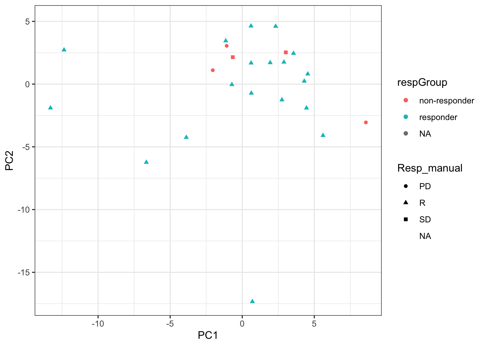
Subset samples:
Only use AML with chemotherapy and enrichned with CD34. PD and SD will
be considered as non-responders (NR) and will be compared to responders
(R) This is different to the SMARTrial study, in which only PD were
compared to responders. If we only use R here, there are not enough
samples.
#dataset
load("../output/metaSmart.RData")
metaSub <- metaSmart[, metaSmart$DISEASE %in% "CLL" &
!is.na(metaSmart$Resp_manual)]
metaSub$respGroup <- ifelse(metaSub$Resp_manual =="R", "R", "NR")
metaSub$respGroup <- factor(metaSub$respGroup, levels = c("R","NR"))Filter out proteins with too many missing values
t1 <- rowSums(!is.na(assay(metaSub))[,metaSub$respGroup=="R"]) >= 3
t2 <- rowSums(!is.na(assay(metaSub))[,metaSub$respGroup=="NR"]) >= 3
keepProt <- t1 & t2
metaSub <- metaSub[keepProt, ]
dim(metaSub)[1] 478 24Number of samples
table(metaSub$respGroup)
R NR
19 5 exprMat <- assays(metaSub)[["imputed"]]
designMat <- model.matrix(~respGroup, colData(metaSub))
fit <- limma::lmFit(exprMat, designMat)
fit2 <- limma::eBayes(fit)
resTab <- limma::topTable(fit2, coef = "respGroupNR", number = Inf) %>%
as_tibble(rownames = "name") %>%
dplyr::rename(pval = P.Value, adj_pval = adj.P.Val) %>%
arrange(pval)
hist(resTab$pval)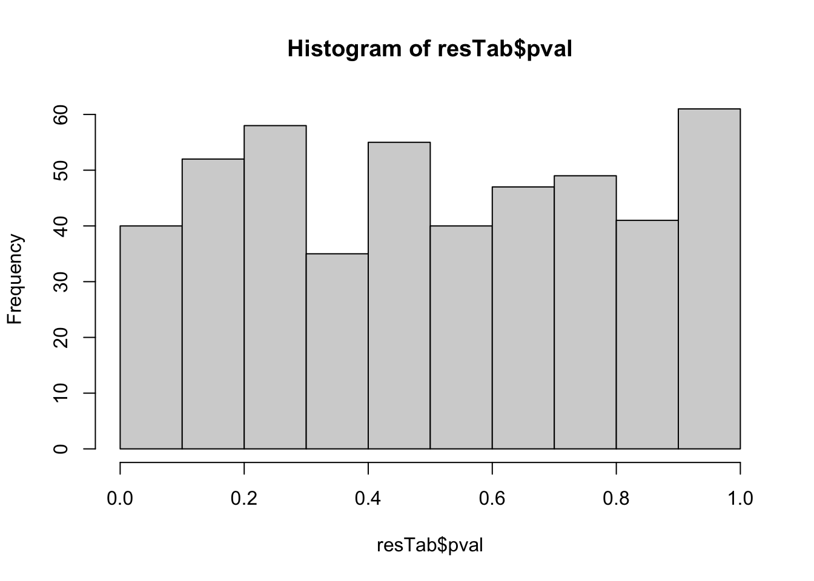
filter(resTab, pval <= 0.05) %>% mutate(across(where(is.numeric), formatC, digits=2)) %>%
select(name, pval, adj_pval, logFC) %>%
DT::datatable()pList <- lapply(seq(9), function(i) {
rec <- resTab[i,]
plotTab <- tibble(expr = exprMat[rec$name,],
group = metaSub$respGroup)
ggplot(plotTab, aes(x=group, y = expr)) +
geom_boxplot(aes(fill = group), alpha=0.5) +
ggbeeswarm::geom_beeswarm() +
ggtitle(sprintf("%s (P=%s)",rec$name, formatC(rec$pval, digits = 2))) +
theme_bw()
})
cowplot::plot_grid(plotlist = pList, ncol=3)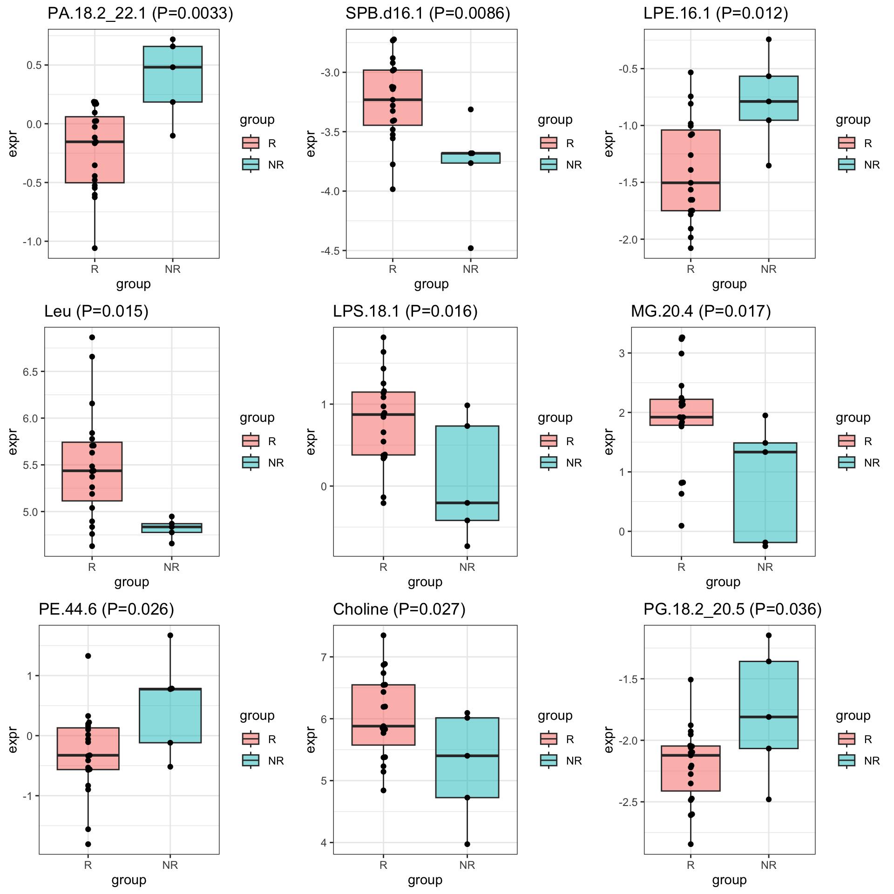
sessionInfo()R version 4.2.0 (2022-04-22)
Platform: x86_64-apple-darwin17.0 (64-bit)
Running under: macOS Big Sur/Monterey 10.16
Matrix products: default
BLAS: /Library/Frameworks/R.framework/Versions/4.2/Resources/lib/libRblas.0.dylib
LAPACK: /Library/Frameworks/R.framework/Versions/4.2/Resources/lib/libRlapack.dylib
locale:
[1] en_US.UTF-8/en_US.UTF-8/en_US.UTF-8/C/en_US.UTF-8/en_US.UTF-8
attached base packages:
[1] stats4 stats graphics grDevices utils datasets methods
[8] base
other attached packages:
[1] forcats_0.5.1 stringr_1.4.1
[3] dplyr_1.1.4.9000 purrr_0.3.4
[5] readr_2.1.2 tidyr_1.2.0
[7] tibble_3.2.1 ggplot2_3.4.1
[9] tidyverse_1.3.2 SummarizedExperiment_1.26.1
[11] Biobase_2.56.0 GenomicRanges_1.48.0
[13] GenomeInfoDb_1.32.2 IRanges_2.30.0
[15] S4Vectors_0.34.0 BiocGenerics_0.42.0
[17] MatrixGenerics_1.8.1 matrixStats_0.62.0
loaded via a namespace (and not attached):
[1] readxl_1.4.0 backports_1.4.1 fastmatch_1.1-3
[4] drc_3.0-1 jyluMisc_0.1.5 workflowr_1.7.0
[7] igraph_1.3.4 shinydashboard_0.7.2 splines_4.2.0
[10] crosstalk_1.2.0 BiocParallel_1.30.3 TH.data_1.1-1
[13] digest_0.6.30 htmltools_0.5.4 fansi_1.0.6
[16] magrittr_2.0.3 googlesheets4_1.0.0 cluster_2.1.3
[19] tzdb_0.3.0 limma_3.52.2 modelr_0.1.8
[22] sandwich_3.0-2 piano_2.12.0 colorspace_2.0-3
[25] rvest_1.0.2 haven_2.5.0 xfun_0.31
[28] crayon_1.5.2 RCurl_1.98-1.7 jsonlite_1.8.3
[31] survival_3.4-0 zoo_1.8-10 glue_1.7.0
[34] survminer_0.4.9 gtable_0.3.0 gargle_1.2.0
[37] zlibbioc_1.42.0 XVector_0.36.0 DelayedArray_0.22.0
[40] car_3.1-0 abind_1.4-5 scales_1.2.0
[43] mvtnorm_1.1-3 DBI_1.1.3 relations_0.6-12
[46] rstatix_0.7.0 Rcpp_1.0.9 plotrix_3.8-2
[49] xtable_1.8-4 km.ci_0.5-6 DT_0.23
[52] htmlwidgets_1.5.4 httr_1.4.3 fgsea_1.22.0
[55] gplots_3.1.3 ellipsis_0.3.2 pkgconfig_2.0.3
[58] farver_2.1.1 sass_0.4.2 dbplyr_2.2.1
[61] utf8_1.2.4 tidyselect_1.2.1 labeling_0.4.2
[64] rlang_1.1.3 later_1.3.0 munsell_0.5.0
[67] cellranger_1.1.0 tools_4.2.0 visNetwork_2.1.0
[70] cachem_1.0.6 cli_3.6.2 generics_0.1.3
[73] broom_1.0.0 evaluate_0.15 fastmap_1.1.0
[76] yaml_2.3.5 knitr_1.39 fs_1.5.2
[79] survMisc_0.5.6 caTools_1.18.2 mime_0.12
[82] slam_0.1-50 xml2_1.3.3 compiler_4.2.0
[85] rstudioapi_0.13 beeswarm_0.4.0 ggsignif_0.6.3
[88] marray_1.74.0 reprex_2.0.1 bslib_0.4.1
[91] stringi_1.7.8 highr_0.9 lattice_0.20-45
[94] Matrix_1.5-4 KMsurv_0.1-5 shinyjs_2.1.0
[97] vctrs_0.6.5 pillar_1.9.0 lifecycle_1.0.4
[100] jquerylib_0.1.4 data.table_1.14.8 cowplot_1.1.1
[103] bitops_1.0-7 httpuv_1.6.6 R6_2.5.1
[106] promises_1.2.0.1 KernSmooth_2.23-20 gridExtra_2.3
[109] vipor_0.4.5 codetools_0.2-18 MASS_7.3-58
[112] gtools_3.9.3 exactRankTests_0.8-35 assertthat_0.2.1
[115] rprojroot_2.0.3 withr_3.0.0 multcomp_1.4-19
[118] GenomeInfoDbData_1.2.8 parallel_4.2.0 hms_1.1.1
[121] grid_4.2.0 rmarkdown_2.14 carData_3.0-5
[124] googledrive_2.0.0 ggpubr_0.4.0 git2r_0.30.1
[127] maxstat_0.7-25 sets_1.0-21 shiny_1.7.4
[130] lubridate_1.8.0 ggbeeswarm_0.6.0